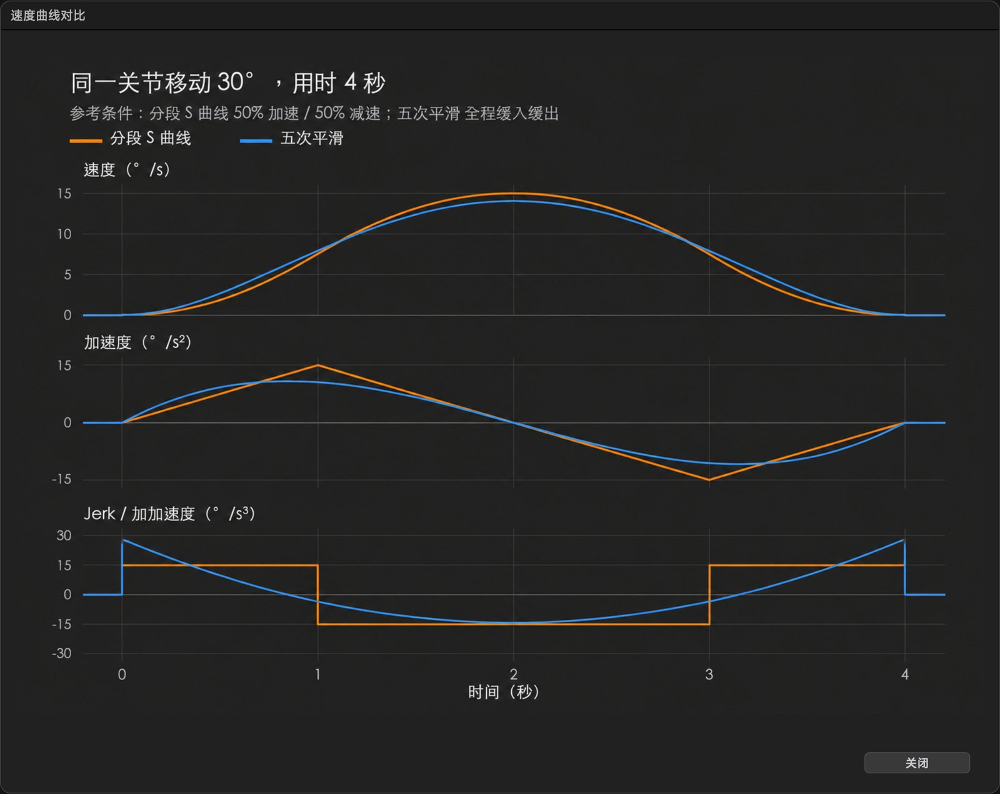

一台协作机械臂能拍出电影级运镜，靠的不是一件东西，而是一串东西配合： 本体、控制柜、示教器、上位机软件。搞清楚谁管什么，选型和排障都会轻松很多。
缺任何一件，它都动不起来 —— 这也是二手交易里最容易被拆开卖的地方。
本体决定能不能动，控制柜决定怎么动，示教器/软件决定谁来指挥，末端决定拍出来是什么。
同样是「控制柜」，其实分两种形态。买二手机械臂时，这一项比本体更容易被忽略 —— 而且柜型不同，接线、IO 数量和软件里的配置项都不一样。
| 柜型 | 形态 | 体积 / 重量 | 常见于 |
|---|---|---|---|
| CC262 | 一体式 | 整柜，体积较大 | CR 系列 |
| CC263 | 视配置而定 | — | CR 系列 |
| CCBOX | 分体式 | 盒子 + 外置电源 | CR 系列 |
| SimBox | 分体式 | 193 × 122 × 35 mm · 约 0.8 kg | Nova 2 / Nova 5 |
| DSC | 分体式小柜 | 220 × 150 × 45 mm · 约 1.2 kg | Nova 系列 |
DT-SimBox-0），买之前让卖家拍一下控制器的系统信息页。有线跟焦接在末端法兰的航空插头上，走的是机械臂本体 —— 跟控制柜型号没有关系，任何柜型都能用。
蓝牙跟焦更不受柜型限制：无线配对就行，几台都行，只看你选哪种连法。
必须连控制柜一起收，并确认柜子和本体是同一套。缺柜基本等于不能用； 换柜或升级固件后，有可能需要重新激活或重新匹配，买之前一定要问清。
这两个东西经常被混为一谈，其实做的是同一件事：手动指挥机械臂。
示教器和官方软件擅长「把这个点记下来、再走到那个点」。 但拍片要的是节奏：哪一秒开始加速、什么时候减速、镜头始终对准目标、跟焦怎么跟 —— 这类事它们做起来很别扭。 上位机软件就是补这一段的。
它不是替代控制柜，也不替代示教器 —— 它站在最上面一层，负责“怎么拍”。
示教器和官方软件同样接在“控制柜”这一层 —— 三者可以并存，随时切换，不会互相锁死。
原则只有一条：控制链路尽量有线。
这个词被用得太随意了。轨迹平滑、速度曲线，都是正常的路径规划，不是防抖。 真正的防抖在控制柜里，不在电脑上。

像上面这种对比 —— 同一关节走 30°、同样 4 秒，比较两种平滑的速度/加速度曲线 —— 这属于路径规划，做的是「让运动更顺」，不是「消除抖动」。
轨迹平滑改的是“走哪儿”，速度曲线平滑改的是“走多快”。两者都是路径规划，都不是防抖 —— 防抖改的是伺服怎么跟。
| 你听到的说法 | 实际属于什么 | 在哪一层做 |
|---|---|---|
| 轨迹平滑、S 曲线、五次平滑 | 路径规划 | 上位机软件 |
| 速度曲线、缓入缓出 | 路径规划 | 上位机软件 |
| 「防抖算法」 | 伺服控制层面的振动抑制 | 控制柜固件 |
凡是「电脑算好轨迹、发给控制柜执行」的方案，都没有防抖算法。 上位机只能决定“往哪儿走、走多快”，走起来抖不抖，由控制柜的伺服环路决定。
换句话说：防抖属于控制柜，控制柜属于机械臂厂家。除非真的有能力和厂家一起改控制柜固件， 否则所谓的「我们的防抖算法」多半只是把曲线调得更平滑一点。
问配套的影视机械臂商家「你们有防抖算法吗」，口头回答没有意义。让他做一个对比实验：
想再往下查，可以看越疆的官方知识库 wiki.dobotoa.cn； 想买二手机械臂，接着看 避坑指南。